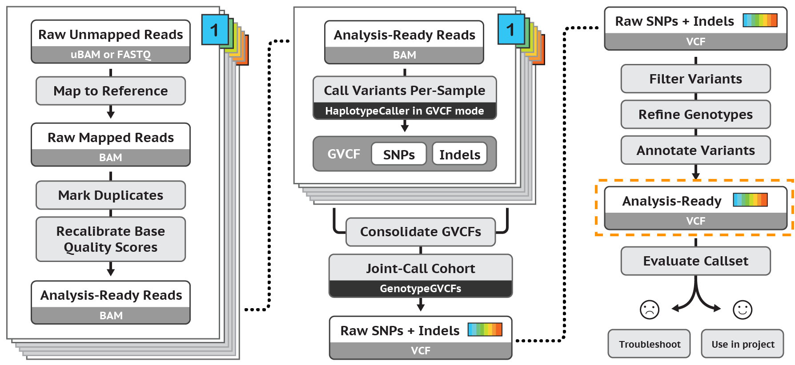
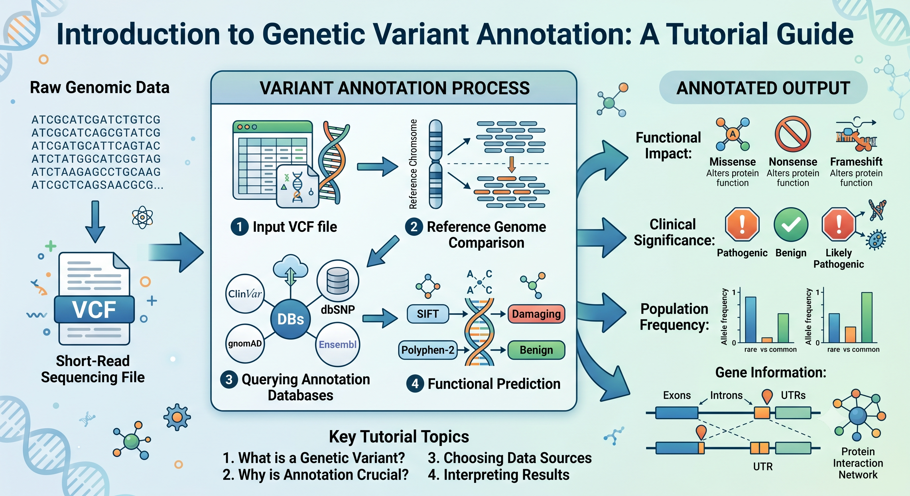
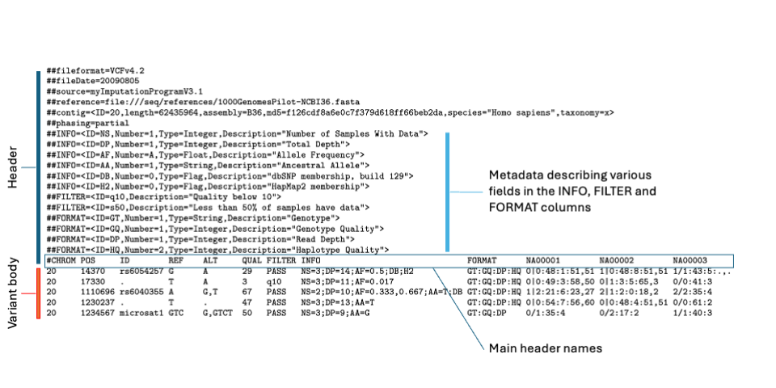
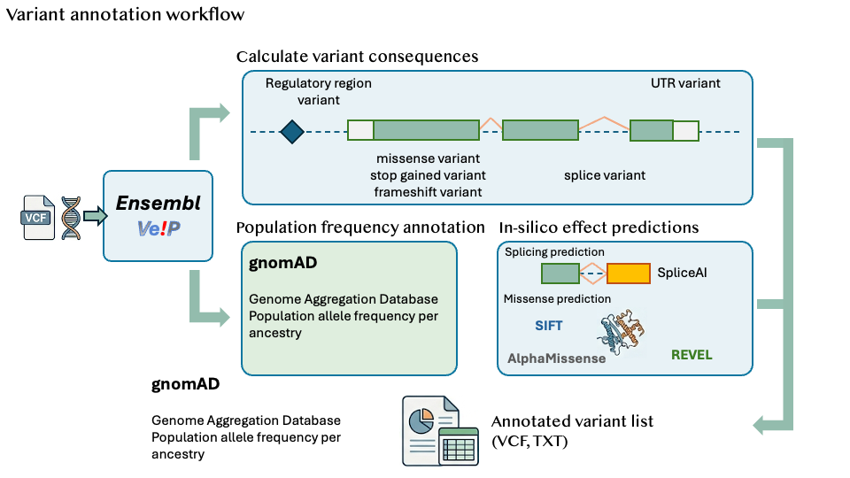

Introduction to Variant Annotation
Last updated on 2026-10-27 | Edit this page
Overview
Questions
- What is variant annotation?
- How do you annotate variants?
Objectives
- Assign biological feature and meaning to genetic variations
- Explain how to annotate variants
- What tools and methods are used to annotate variants
- Explain how variant annotations can be used to prioritise variants
Introduction
This is an introduction to variant annotation. We will cover the basics of what variant annotation is, how it works, and why it is important in genomics research and clinical applications. By the end of this episode, you should have a good understanding of the fundamental concepts of variant annotation and be able to apply this knowledge to your own genomic analyses.
The workshop is designed to be interactive, so we will have exercises and challenges throughout the episode to help you practice what you have learned. Don’t worry if you get stuck, we will provide solutions and explanations to help you along the way.
This workshop is designed for users with fundamentals of genomics and bioinformatics, and have some background in working in the shell environment.
Our starting point for variant annotation analysis will be a list of variants in VCF file format. This is usually the output of a variant calling pipeline such as the GATK4 pipeline in the figure below. See previous variant calling workshops for how to go from raw sequencing data to a VCF file. We won’t cover this in the workshop, but we will cover how to annotate variants in a VCF file.

Figure 1: Overview of the GATK4 variant calling pipeline. The GATK4 pipeline is a widely used variant calling pipeline that takes raw sequencing data and produces a VCF file containing identified variants (highlighted box above), which is the input for variant annotation.
Background
Variant annotation is the process of adding biological context to genetic variants so that researchers and clinicians can better understand what they might mean. This involves identifying which gene a variant is associated with, predicting how it could affect the resulting protein, and examining how common it is across different populations. By providing this information, variant annotation plays a crucial role in genomic analysis, helping to assess the potential significance of genetic changes in health, disease, and individual patient care.

Figure 2: Overview of variant annotation. The process of variant annotation involves taking raw genomic coordinates (such as those found in a VCF file) and intersecting them with curated biological databases to assign genetic consequence, functional annotation, and population-level metadata to each identified sequence variation. This helps provide biological context to the variants and can guide clinical management.
The VCF file format (VCF v4.2 specification) is a standard format for storing genetic variant data. It contains information about the position of the variant in the genome, the reference and alternate alleles, and various annotations about the variant. The VCF file format is widely used by various variant calling programs to output variant data, and it is important to understand how to work with VCF files when performing variant annotation. In this workshop, we will be working with an example VCF file and using various tools and resources to annotate the variants contained within them. In this workshop, we will cover how to use Ensembl VEP to annotate variants, as well as how to interpret the results of variant annotation and use them to prioritize variants for further analysis. By the end of this workshop, you should have a good understanding of how to perform variant annotation and how to use the results to inform your genomic analyses.

Figure 3: An example VCF file can be found here
The important variant information colums in a VCF file include: CHROM, POS, ID, REF, ALT, QUAL, FILTER, INFO. The CHROM and POS columns provide the genomic coordinates of the variant, while the REF and ALT columns indicate the reference and alternate alleles. The INFO column contains additional annotations about the variant, such as its predicted effect on the protein product or its frequency in different populations. Understanding these columns is crucial for performing variant annotation and interpreting the results.
| Field | Description |
|---|---|
| CHROM | Chromosome |
| POS | Position |
| ID | Variant ID, variant identifier (e.g. rsID) |
| REF | Reference Allele |
| ALT | Alternate Allele: comma-separated list of alternate alleles |
| QUAL | Quality Score: score indicating the confidence in the variant call |
| FILTER | Filter Status: indicates whether the variant passes quality filters |
| INFO | Additional Annotations: from variant callers and annotation tools or databases such as VEP, population frequencies, clinical significance |
Table 1. Important variant information columns in a VCF file.
Variant annotation workflow
Here is a brief overview of the variant annotation workflow. The workflow typically starts with a VCF file containing genetic variants, which is then processed through various tools and databases to assign biological context and functional information to each variant. The annotated variants can then be prioritized based on their potential impact on health and disease.

Figure 4: An example variant annotation workflow.
- Variant annotation is the process of adding biological context to genetic variants
- Genetic variants are typically stored in a VCF file format
- The annotation step involves running tools such as VEP to annotate variant consequences
- Additional external resources and databases are used to enhance variant annotation